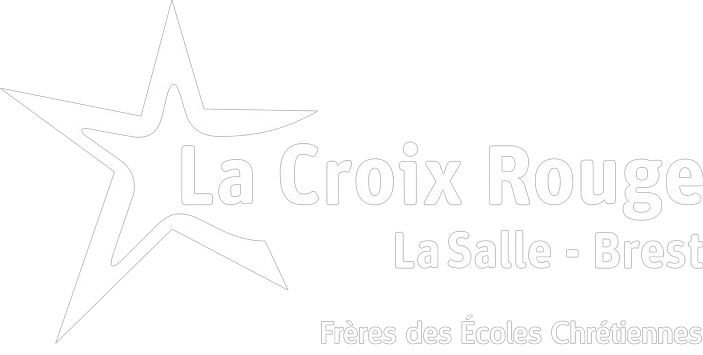

Niryo is a company creating some robot for the 4.0 industry.
They are the creator of Ned and Ned² Robot, this last featured on this website.
Their educational method to learn how work the 4.0 industry is very pedagogue.
Click here to access to the Niryo.com website
Click here to access to the presentation of the robot Ned².
Gwendal had the project to install the ROS (Robot Operating System).
ROS allows the simulation of the robot NED².
The simulation allows also the possibility to manage the environmental conditions around the robot.
And he permits to do some simulation test in order to avoid all possible damage on the hardware.
On this page bellow, Gwendal has wrote the installation instructions of ROS
Click here to access the to ros.html website.
On this proposed website, all the problems who can be encountered are presented.
That permit to know what the error code who can be encourtered during the utilization of the robot.
Click here to access to the possible-issues website.
Our Two-Year Technical Degree in High School, named "BTS SN", just become the "BTS CIEL".
Cybersécurité Informatique et réseaux, Electronique.
To discover all the modification of this reform,
La Croix Rouge offers you an explanation of this new sector.
Click here to access to the BTS CIEL website.
